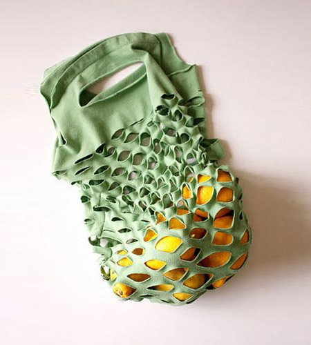

Air-Dry Your Laundry
Skip the electric dryer when possible. Hanging garments cuts down on energy use and protects delicate fabrics from heat damage.
Any discarded fabric, fiber, or clothing item that is no longer wanted, used, or needed. This includes old clothes, shoes, bed sheets, towels, and curtains, as well as factory leftovers like fabric scraps and production off-cuts.
Materials discarded during textile production, including fabric scraps, cutting-room leftovers, defective products, and excess or unsold inventory.
Common Forms: Fabric scraps and off-cuts, yarn and fiber waste, defective or unsold products
Characteristics: Usually cleaner, easier to sort, and made of known materials.
Materials discarded by consumers after use, including worn-out or outgrown clothing, old bedding, curtains, carpets, and shoes.
Common Forms: Unwanted or damaged clothes, footwear, towels, bed sheets, curtains, carpets, and other household textiles.
Characteristics: Often contains blended fibers. Zippers, buttons, and other hardware may need to be removed before recycling.
Skip the electric dryer when possible. Hanging garments cuts down on energy use and protects delicate fabrics from heat damage.

Turn worn-out cotton T-shirts into cleaning rags instead of using disposable paper towels.
Practice the “one-in, one-out” rule and pause before making an impulse purchase.
You can donate textile waste, fabric scraps (retaso), and unusable clothing in Metro Manila through local circular-fashion initiatives and recycling organizations. Contact them first to confirm drop-off or pickup arrangements.